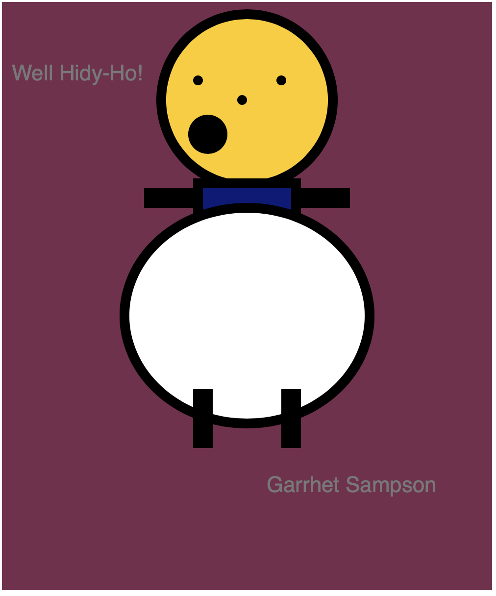
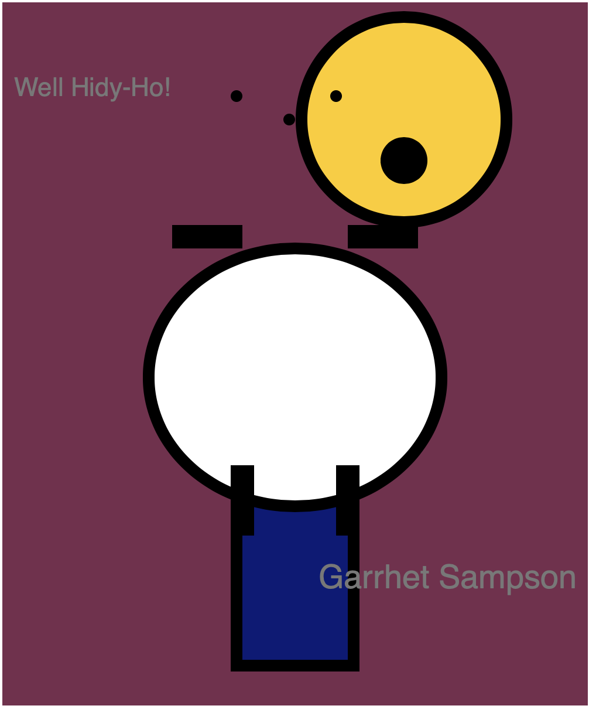
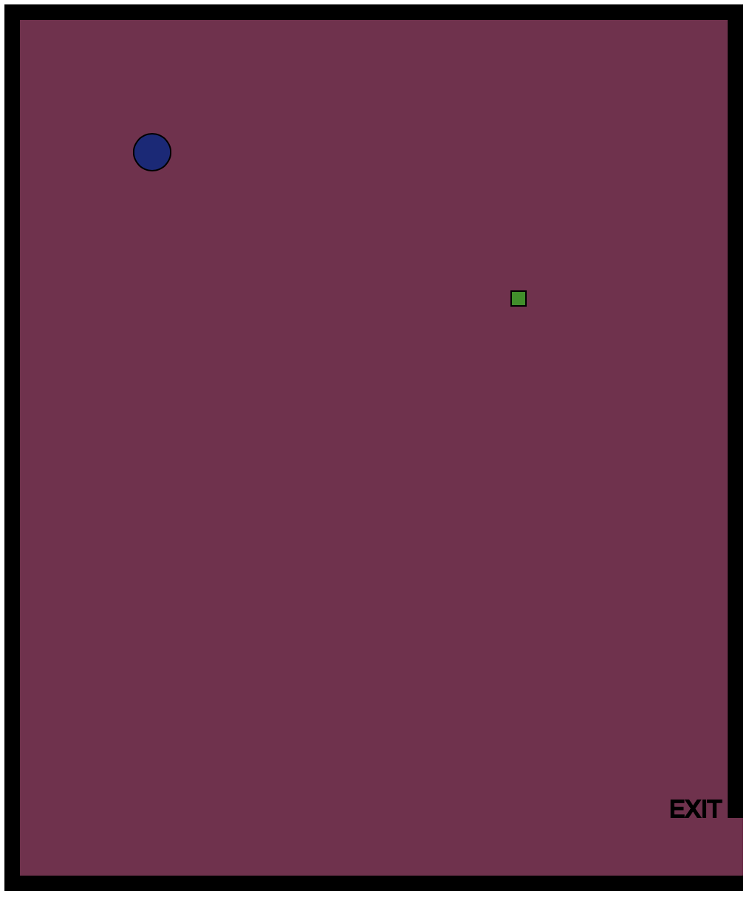
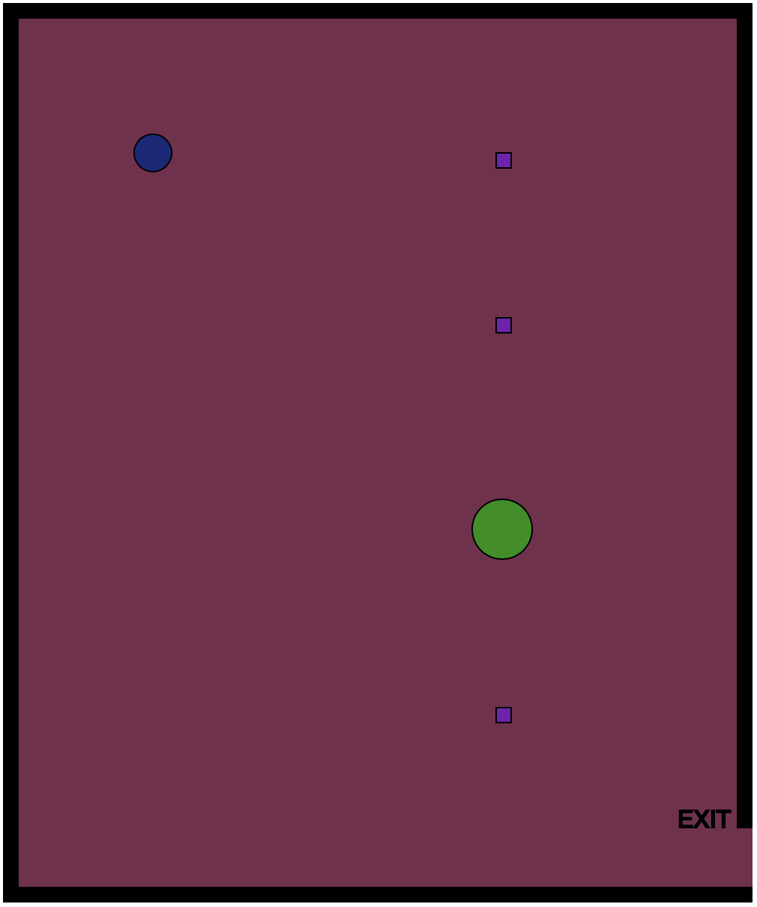
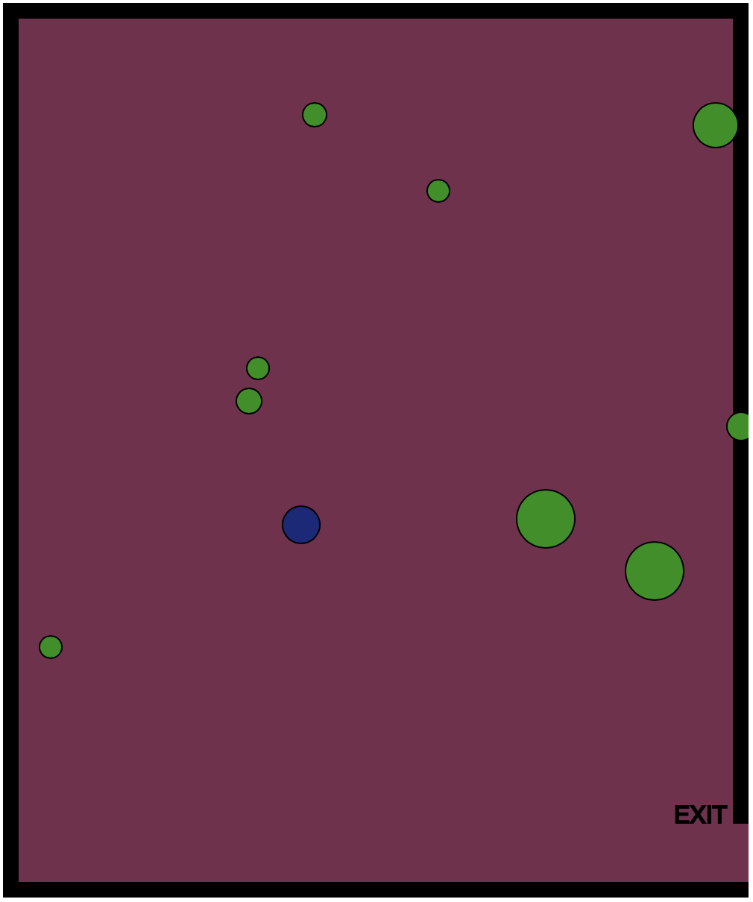

Along with the work I did creating this website, bellow is some of my latest work along with short descriptions of each project.

For my first project we were asked to create a flat self portrait that featured things like function commands.

Next we made the self portrait move by programming in it's movement speed and distance it would travel along the canvas.

Next we experimented with interactive commands such as linking movement to hitting certain keys. This allowed us to learn what it's like to build something that is interactive and that responded to commands.

Then we learned how to add motion to a variety of objects.

Finally we learned how to have repeating objects that moved in and out of the screen only to reapear on the other side.
This concludes my latest development work. Go back to learn more or get in touch!